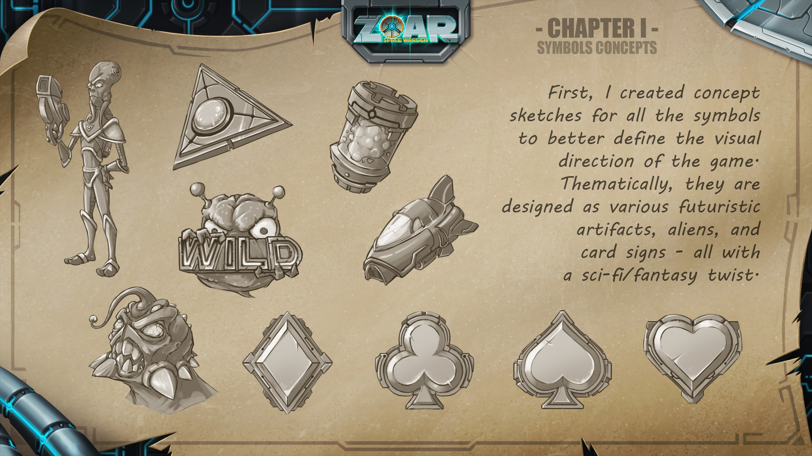
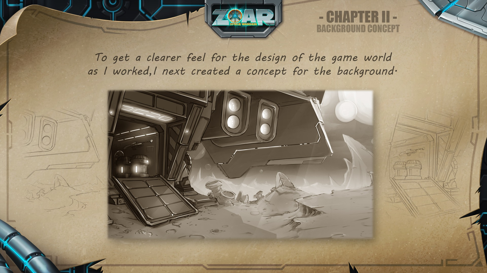
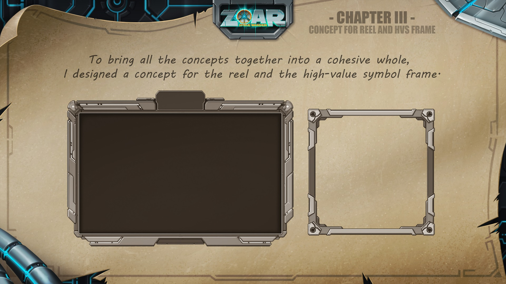
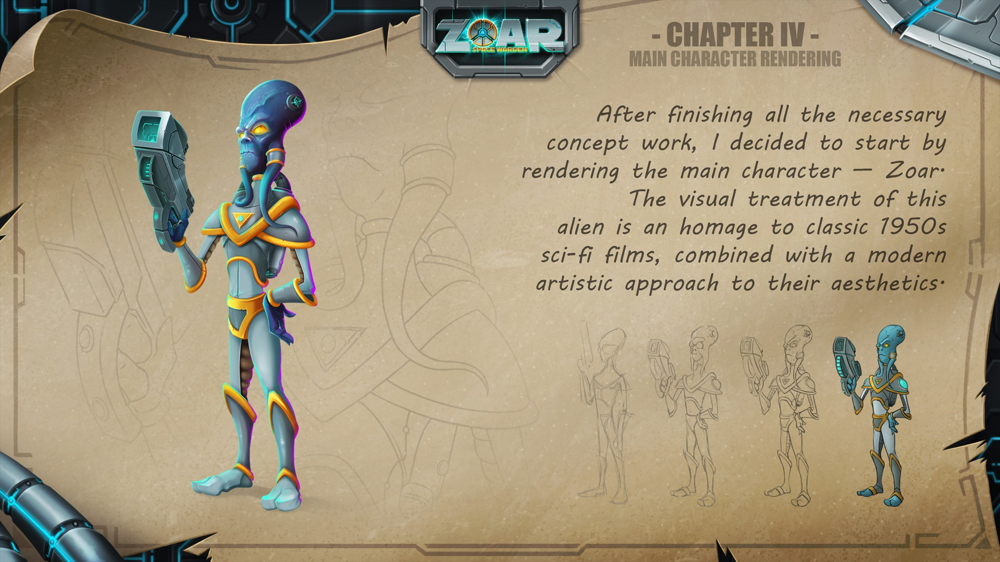
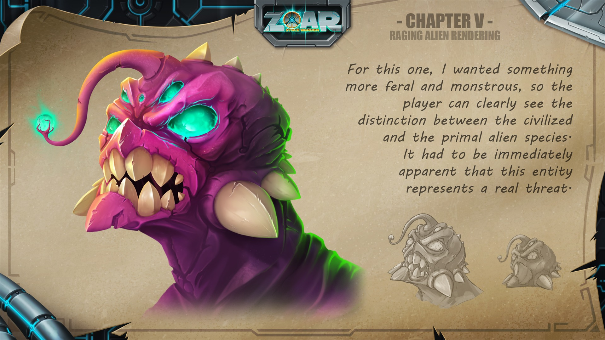
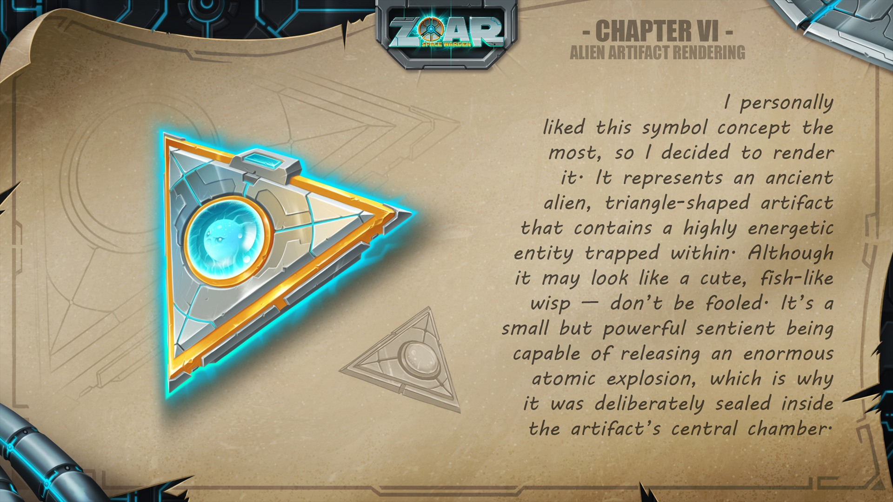
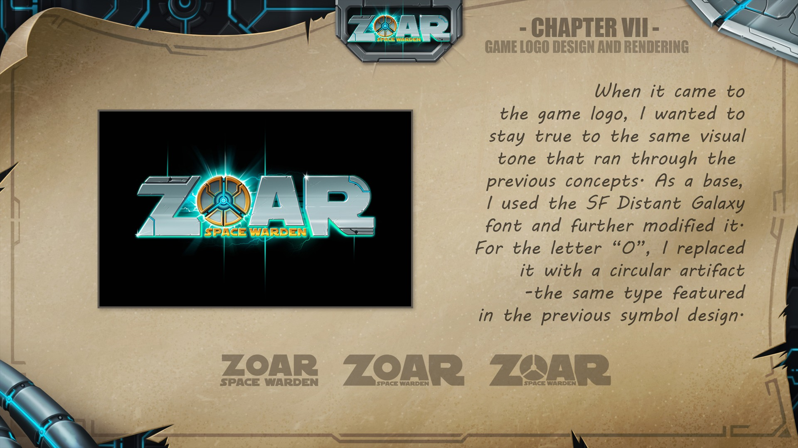
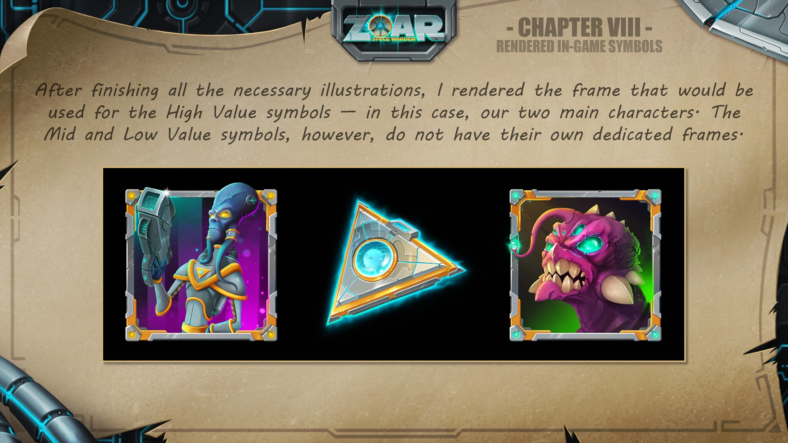
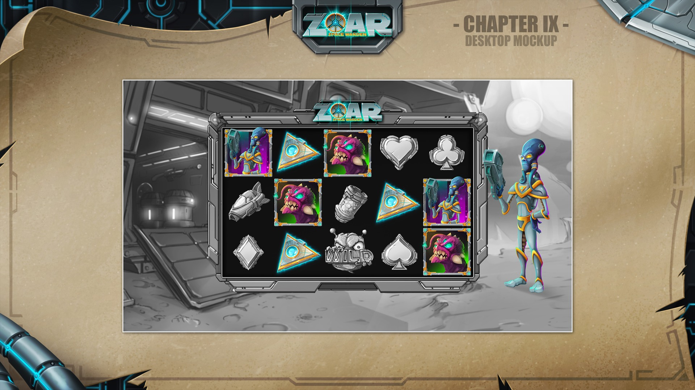

Game Concept / Mockup Workflow Example
Zoar: Space Warden
A self-initiated concept-to-production simulation showing how I build a slot game's visual language from first sketch to final mockup.








